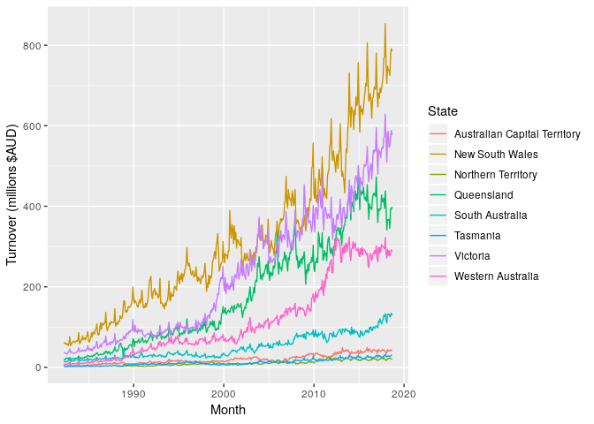
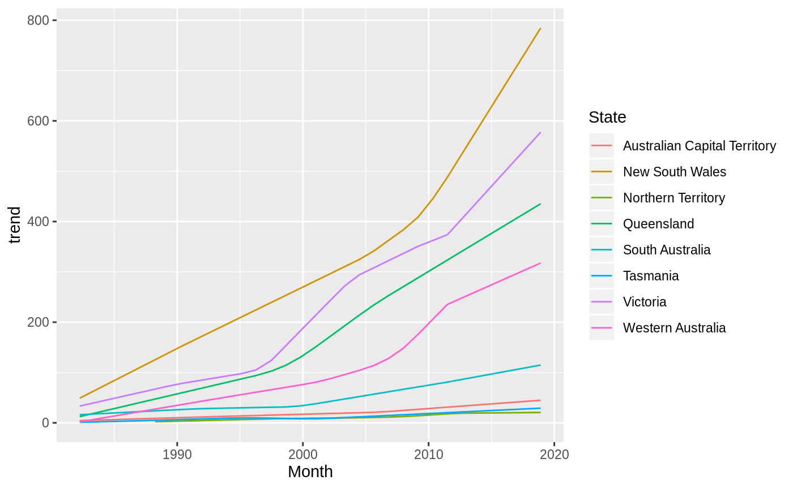
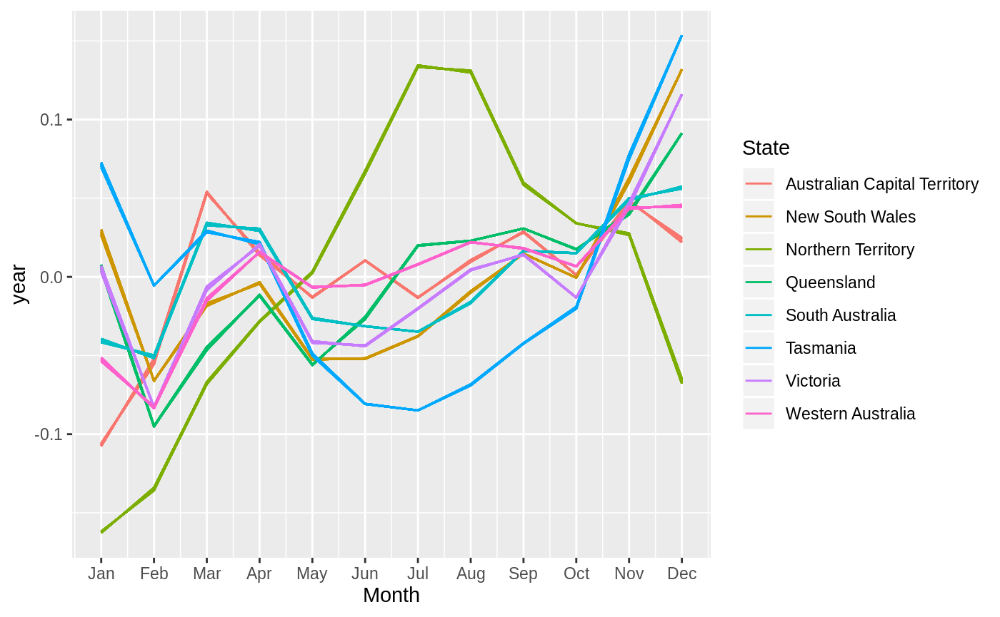
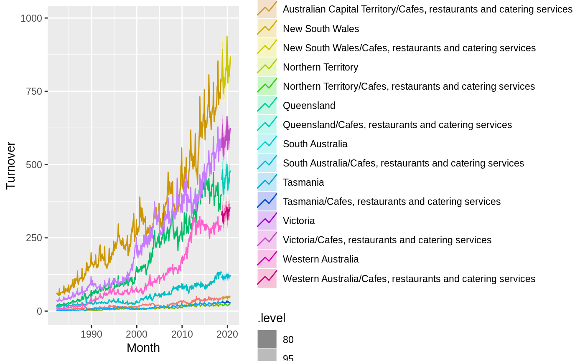

This package provides a tidy R interface to the prophet forecasting procedure using fable. This package makes use of the prophet package for R.
Installation
You can install the development version of fable.prophet from Github with:
Example
Suppose we wanted to model Australia’s monthly turnover for cafes, restaurants and catering services. The data is available from the Australian Bureau of Statistics catalogue 8501.0, and in the tsibbledata package.
library(tsibble)
library(dplyr)
cafe <- tsibbledata::aus_retail %>%
filter(Industry == "Cafes, restaurants and catering services")
Each series generally exhibits an increasing trend with an annual seasonal pattern that varies proportionally to the level of the series. At a monthly level, any holiday effects can be modelled using a seasonal term. A piecewise linear trend is included by default, and so it is not included in the model specification below.
library(fable.prophet)
#> Loading required package: Rcpp
#> Loading required package: fabletools
fit <- cafe %>%
model(
prophet = prophet(Turnover ~ season("year", 4, type = "multiplicative"))
)fit
#> # A mable: 8 x 3
#> # Key: State, Industry [8]
#> State Industry prophet
#> <chr> <chr> <model>
#> 1 Australian Capital Territ… Cafes, restaurants and catering serv… <prophe…
#> 2 New South Wales Cafes, restaurants and catering serv… <prophe…
#> 3 Northern Territory Cafes, restaurants and catering serv… <prophe…
#> 4 Queensland Cafes, restaurants and catering serv… <prophe…
#> 5 South Australia Cafes, restaurants and catering serv… <prophe…
#> 6 Tasmania Cafes, restaurants and catering serv… <prophe…
#> 7 Victoria Cafes, restaurants and catering serv… <prophe…
#> 8 Western Australia Cafes, restaurants and catering serv… <prophe…The above output confirms that this Prophet model has been fitted to each of the time series. Components from this model can be extracted:
components(fit)
#> # A dable: 3,456 x 10 [1M]
#> # Key: State, Industry, .model [8]
#> # Prophet Decomposition: Turnover = trend * (1 + multiplicative_terms) +
#> # additive_terms + .resid
#> State Industry .model Month Turnover additive_terms
#> <chr> <chr> <chr> <mth> <dbl> <dbl>
#> 1 Aust… Cafes, … proph… 1982 Apr 4.4 0
#> 2 Aust… Cafes, … proph… 1982 May 3.4 0
#> 3 Aust… Cafes, … proph… 1982 Jun 3.6 0
#> 4 Aust… Cafes, … proph… 1982 Jul 4 0
#> 5 Aust… Cafes, … proph… 1982 Aug 3.6 0
#> 6 Aust… Cafes, … proph… 1982 Sep 4.2 0
#> 7 Aust… Cafes, … proph… 1982 Oct 4.8 0
#> 8 Aust… Cafes, … proph… 1982 Nov 5.4 0
#> 9 Aust… Cafes, … proph… 1982 Dec 6.9 0
#> 10 Aust… Cafes, … proph… 1983 Jan 3.8 0
#> # … with 3,446 more rows, and 4 more variables:
#> # multiplicative_terms <dbl>, trend <dbl>, year <dbl>, .resid <dbl>
Note that the annual seasonal pattern does not change very quickly, although it does differ slightly between years. A very differently seasonal pattern can be seen for the Northern Territory. We can also produce forecasts for each of these series over the next two years.
#> # A fable: 192 x 6 [1M]
#> # Key: State, Industry, .model [8]
#> State Industry .model Month Turnover .distribution
#> <chr> <chr> <chr> <mth> <dbl> <dist>
#> 1 Australian … Cafes, restaurant… prophet 2019 Jan 40.2 sim(=dbl[100…
#> 2 Australian … Cafes, restaurant… prophet 2019 Feb 42.7 sim(=dbl[100…
#> 3 Australian … Cafes, restaurant… prophet 2019 Mar 47.7 sim(=dbl[100…
#> 4 Australian … Cafes, restaurant… prophet 2019 Apr 46.2 sim(=dbl[100…
#> 5 Australian … Cafes, restaurant… prophet 2019 May 45.0 sim(=dbl[100…
#> 6 Australian … Cafes, restaurant… prophet 2019 Jun 46.2 sim(=dbl[100…
#> 7 Australian … Cafes, restaurant… prophet 2019 Jul 45.3 sim(=dbl[100…
#> 8 Australian … Cafes, restaurant… prophet 2019 Aug 46.5 sim(=dbl[100…
#> 9 Australian … Cafes, restaurant… prophet 2019 Sep 47.6 sim(=dbl[100…
#> 10 Australian … Cafes, restaurant… prophet 2019 Oct 46.4 sim(=dbl[100…
#> # … with 182 more rows